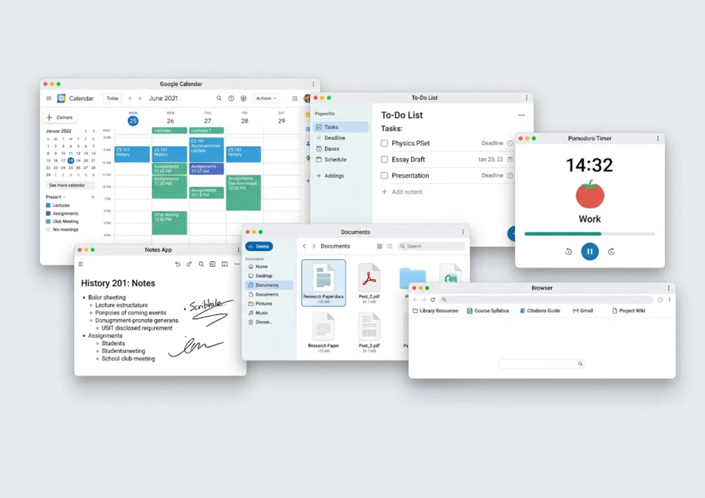
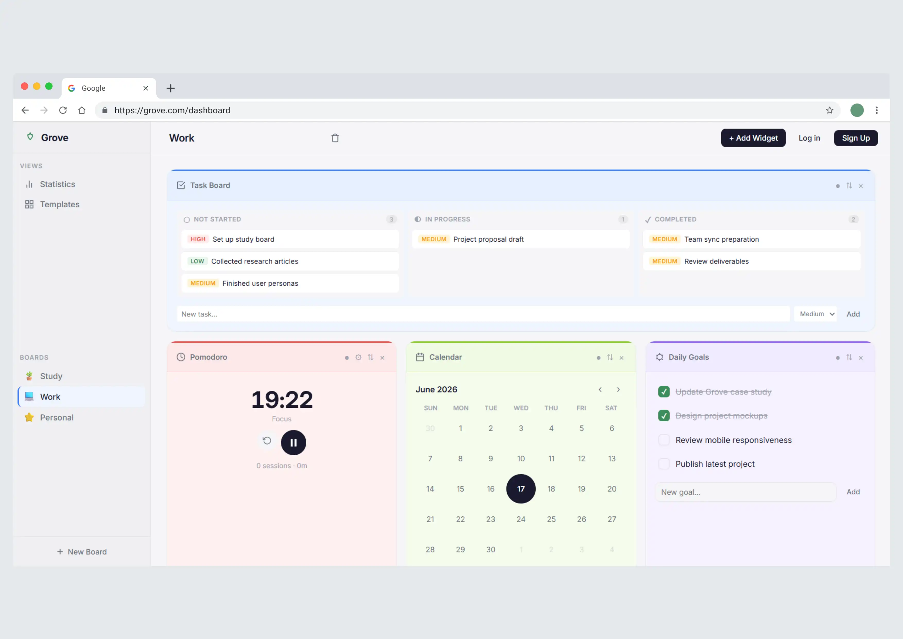
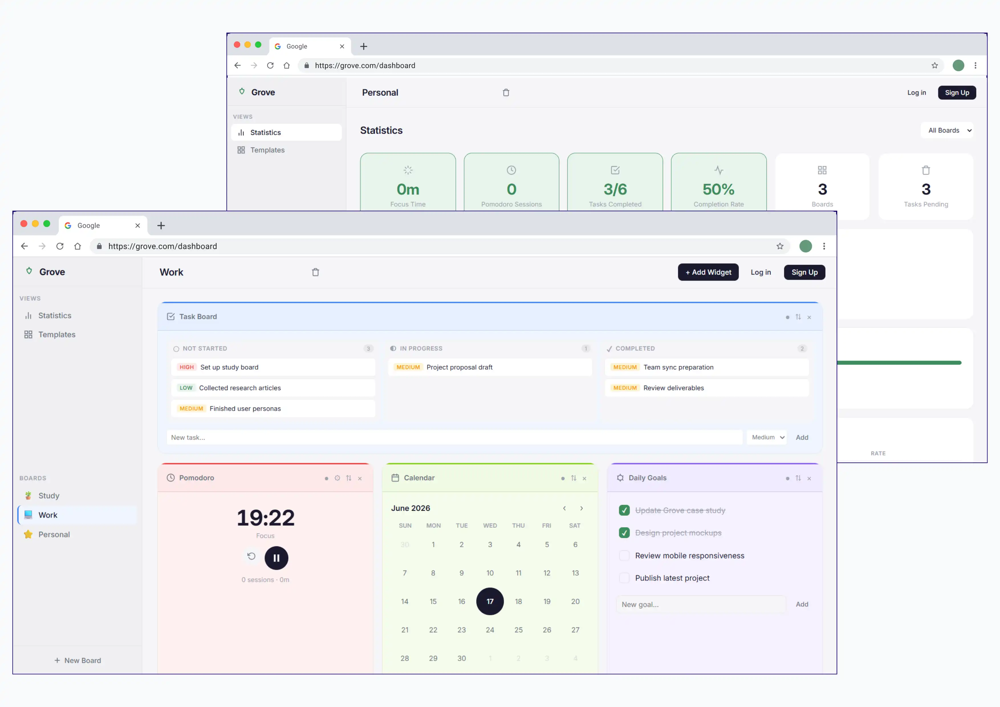
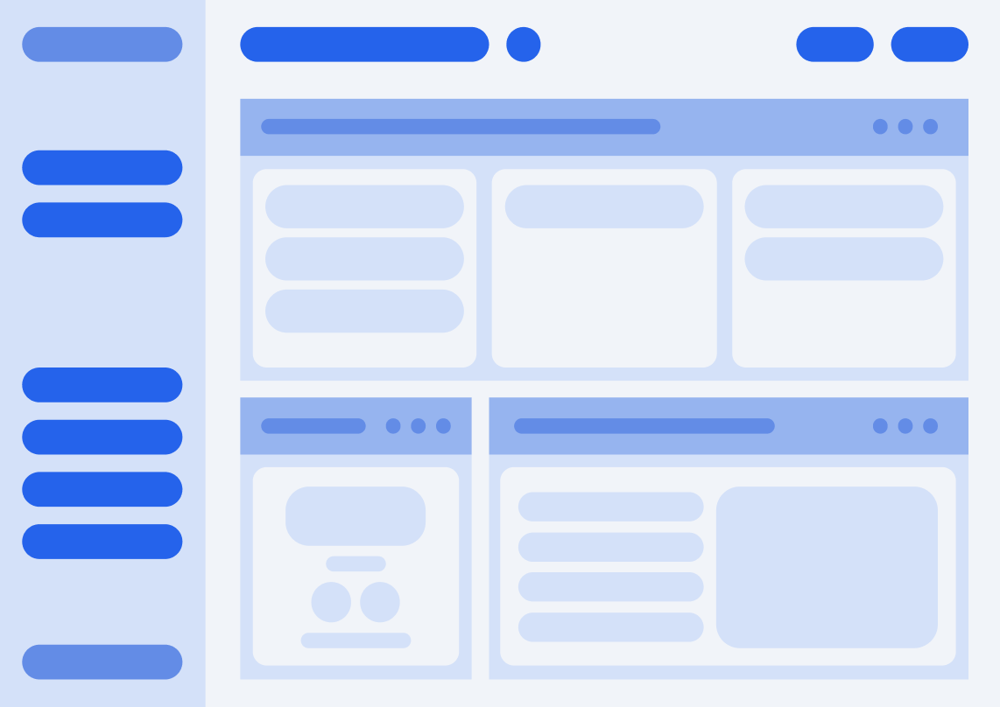
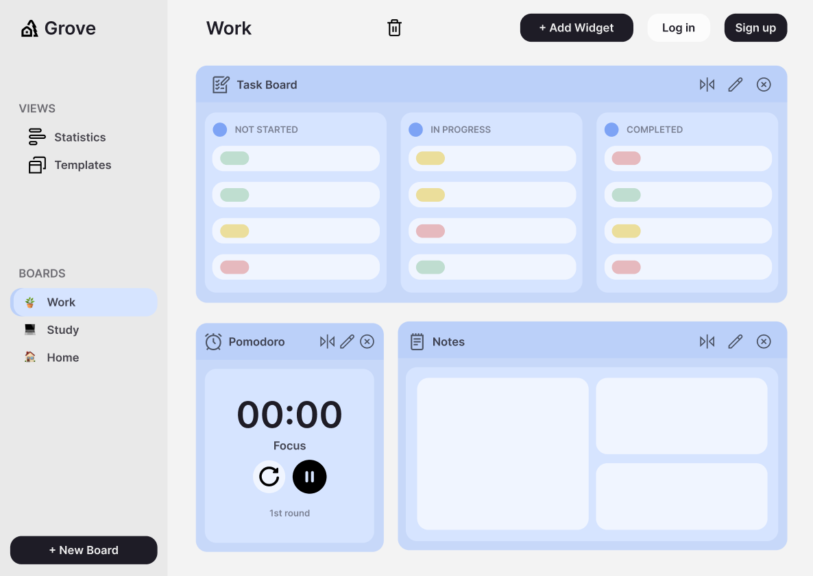
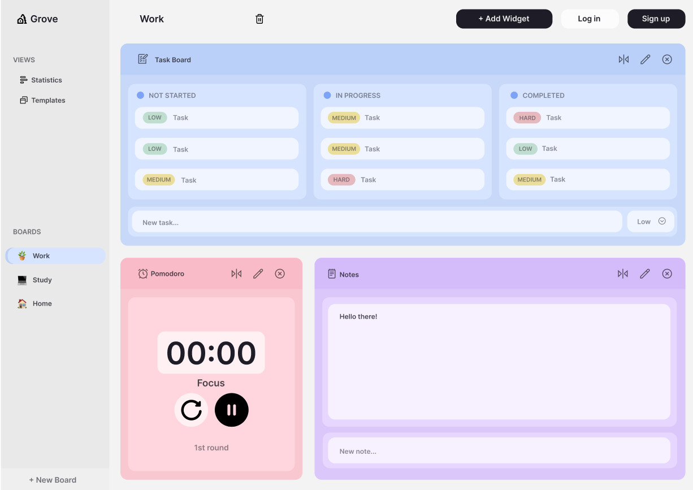
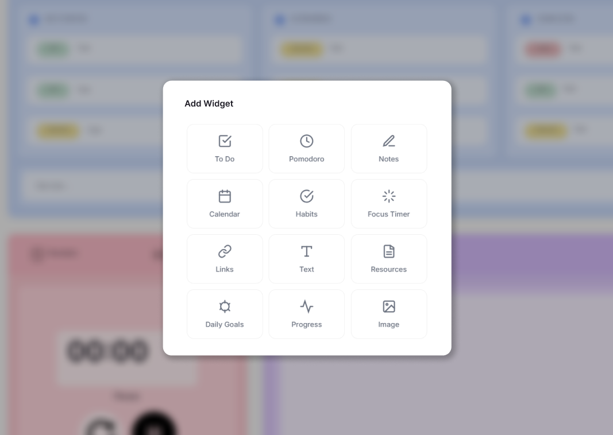
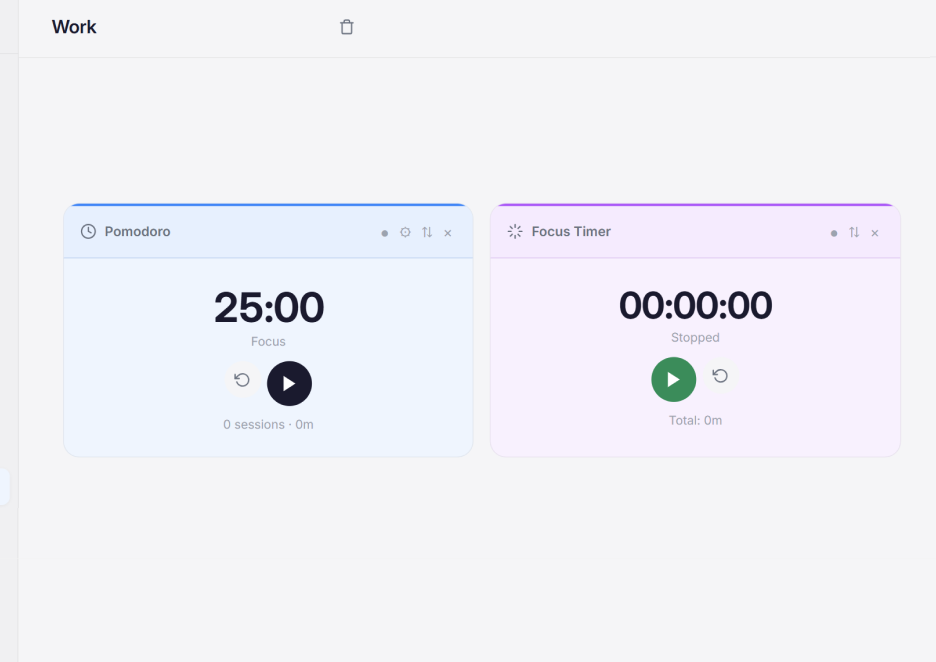
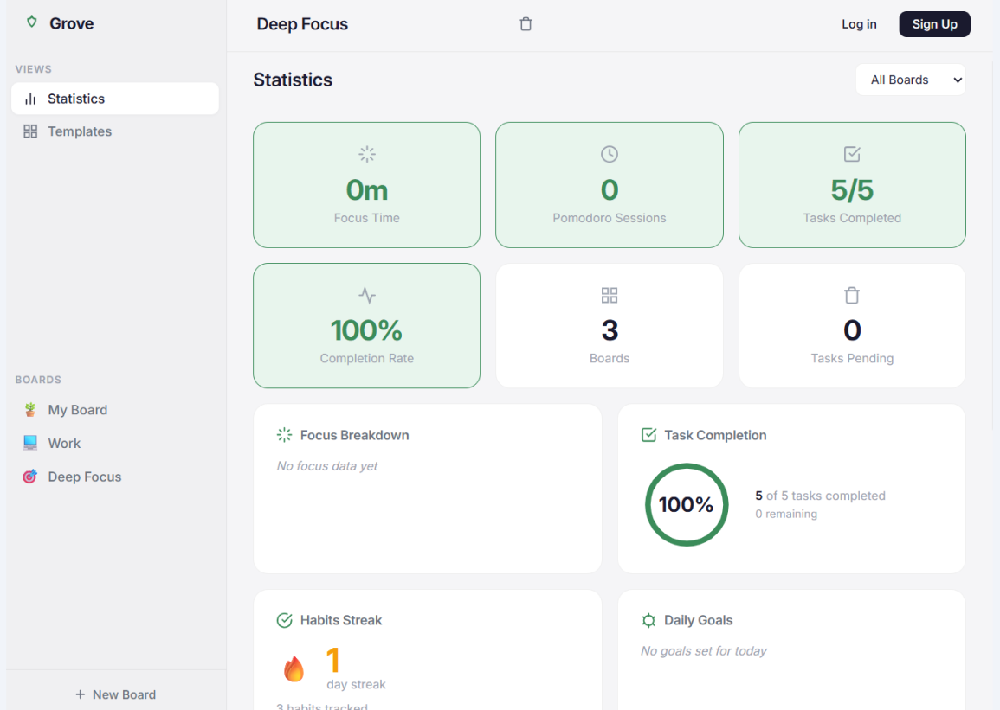
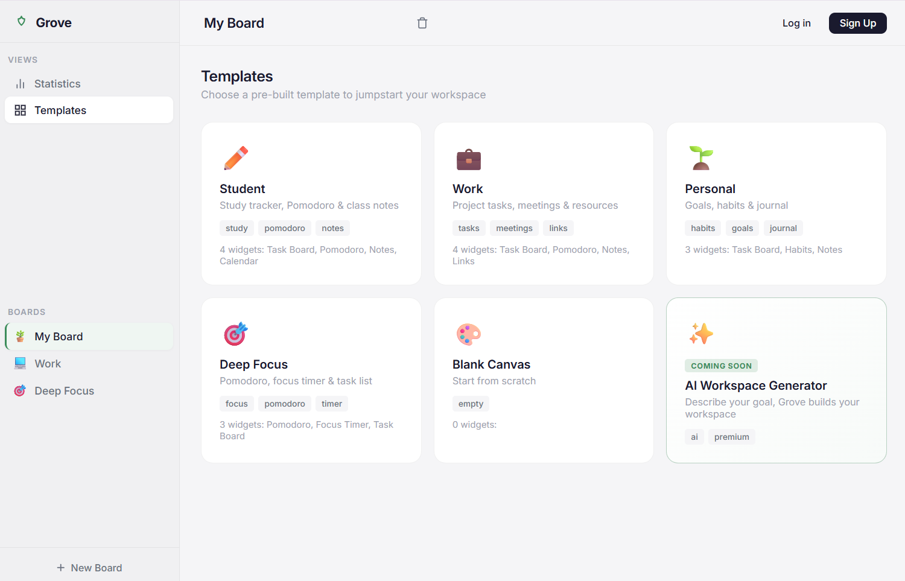

El Problema
Los estudiantes cambian entre 4+ apps para organizar su estudio: calendario, notas, temporizador y apps de flashcards. Cambiar constantemente entre aplicaciones aumenta las distracciones y dificulta mantener el enfoque.

Calendario · Notas · Temporizador · Flashcards · Spreadsheet de progreso

Todo en un solo espacio: planificación, estudio, progreso
Objetivo de Diseño
Crear una experiencia de estudio flexible y sin distracciones donde se reuniera las herramientas esenciales de productividad sin imponer una única forma de estudiar.

De Idea a Interfaz
Baja fidelidad
Exploración de layouts, flujos de navegación y estructura de boards. 12 configuraciones descartadas antes de llegar a la dirección correcta.

Conceptos intermedios
Sistema de colores, tipografía, componentes reutilizables y primeros prototipos clickeables para validar la dirección visual.

UI pulida
Alta fidelidad con design system completo, componentes documentados, specs de interacción y handoff listo.

Funciones Clave

Boards Personalizables
Cada estudiante crea su propio workspace con los widgets que necesita: lista de tareas, calendario, notas o flashcards.

Modos de Enfoque
Pomodoro integrado y Focus Time que oculta todo lo no esencial. Timer, objetivo de sesión y bloqueo de distracciones.

Estadísticas
Gráficos de progreso semanal, tiempo de estudio por materia y rachas de actividad para mantener la motivación.
Personalización
Temas, layouts y organizadores flexibles. El workspace se adapta al estilo de estudio de cada estudiante.
Producto Final
Visión Futura
Creación de Boards con IA
El estudiante describe su materia y objetivos de estudio. La IA genera un board optimizado con widgets sugeridos, horarios recomendados y plantillas específicas para esa materia.

Reflexión
Grove me enseñó que la mejor herramienta de productividad es la que se adapta al usuario — no al revés. Diseñar para múltiples estilos de estudio me obligó a pensar en flexibilidad desde el primer boceto y a cuestionar constantemente qué debía ser una decisión del sistema y qué debía quedar en manos del usuario.
El mayor desafío fue equilibrar simplicidad con personalización: suficiente estructura para orientar, suficiente libertad para que cada persona pudiera hacer suyo el espacio. Este proyecto fortaleció mi capacidad para diseñar experiencias completas, llevando una idea desde la exploración inicial hasta un producto funcional sin perder de vista la experiencia del usuario.